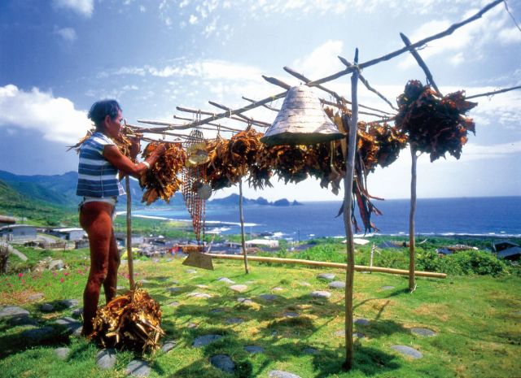

達悟族飛魚季
達悟族的傳統祭儀根植於他們的傳統生計。因為蘭嶼四周被海洋環繞，漁業一直是達悟社會的主要生計之一，因為它們是洄游性魚類，每年2至3月左右會隨著黑潮北上，來到蘭嶼附近海域，然後在7至8月再次南下返回。這段時間內，飛魚成為蘭嶼附近海域的主要魚種，也在達悟族社會文化中扮演著至關重要的角色。
飛魚在達悟族的文化中擁有特殊地位，不僅在神話中受尊崇，還在傳統歷法中扮演關鍵角色。達悟傳統歷法稱為Ahehep no tao，以月亮的出落和朔望來制定日和月。然而，由於月亮週期無法反映時節變化，因此飛魚的捕獲季節成為季節區分的依據，分為Rayon（飛魚季節）、Teyteyka（結束捕飛魚的季節）和Amyan（飛魚將來的季節）。不同的季節有不同的活動，如Kasyaman標誌著年終，而Kalimman則是食用飛魚的季節。然而，現今在部落中對傳統夜歷對應至現行歷法的起始月份仍無統一共識，但一些漸漸開始參照漢人農民歷。儘管如此，達悟族在傳統祭儀和飛魚季節中仍然堅守傳統夜歷，以保存他們的信仰和文化觀念，這也被認定為無形文化資產的一部分。
根據傳說，達悟族的始祖石生人和竹生人是由天神在蘭嶼降生的，他們擁有特殊的神力，可以理解新事物的作用，並發明儀式和生活工具，並繁衍出達悟人的祖先。其中，石生人的孫子曾經因食用飛魚而患皮膚病，而得到飛魚王黑翅的夢境指引，學習了有關飛魚的各種知識，包括飛魚的種類、捕捉和處理方法等。這些知識成為了達悟人生活中的重要傳承，形成了飛魚祭和相關的習俗，並成為他們文化中必須遵守的傳統禮俗。